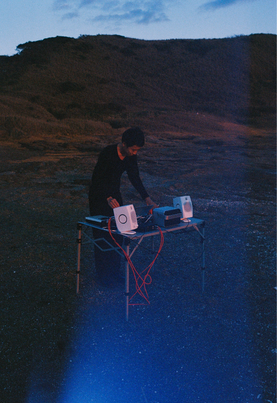
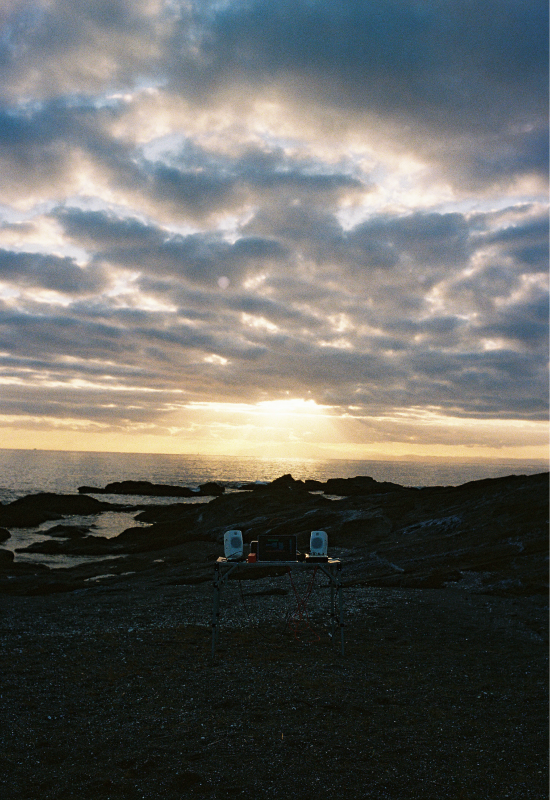
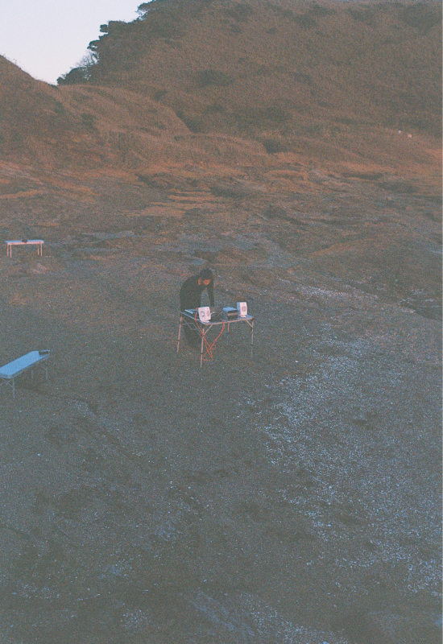
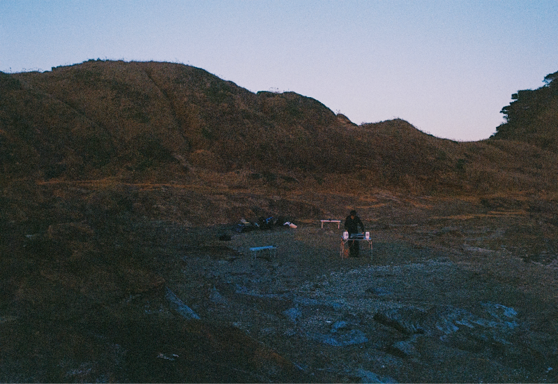
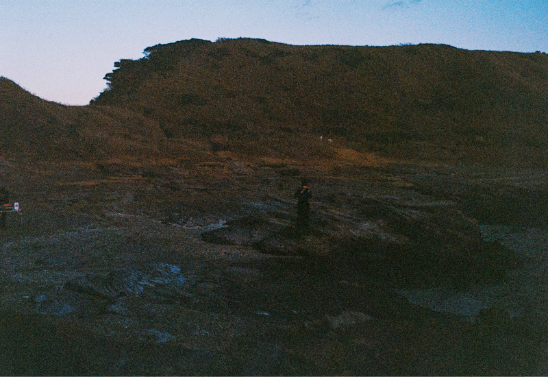
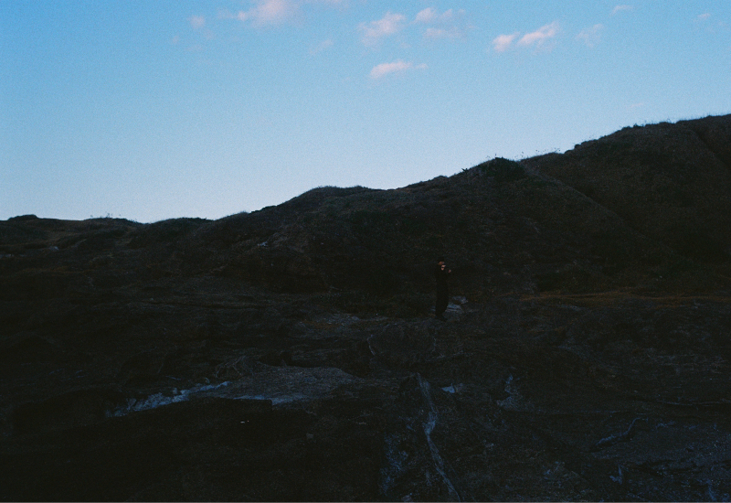

Voices / Experience
V98
EXPERIENCE?
.mp5
Audio & Transcription
Start Experience
nodayuta.mp3
野田結太 -- 10:55
kikuchiyuki_jgoe.mp3
菊地佑樹 -- 53:49

kurosaki.mp5
野田結太 / 葉山 黒崎海岸 -- 10:55
Building Audio Map
.MP5
← BACK
野田結太.mp5
loc. 葉山 黒崎海岸 / 2026.12.16
今回の葉山市、黒崎海岸での.mp5では、レコーダーを持ち音の収集を行った。
日没ごろ、野田の制作音源を海に正対し演奏。
録音音源は撮影後、「Kurosaki ambient」 として発展。
sound: @yutand___
Photography: @la_viscuit
Production: @___.mp5





← BACK
00:00 / 00:00